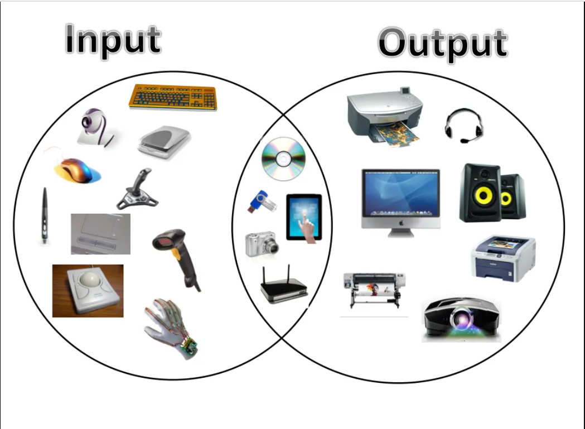
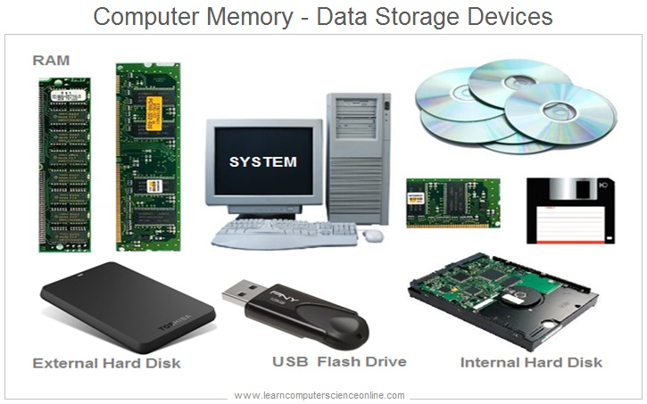
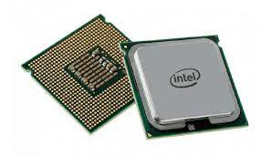
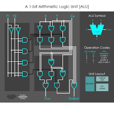
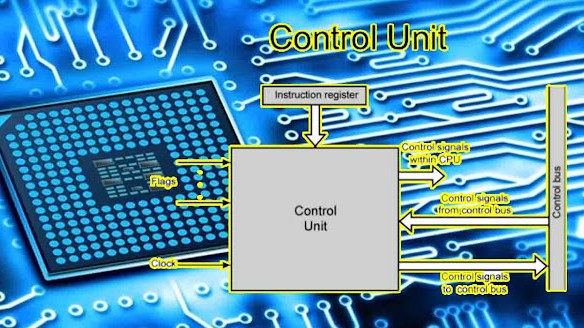

5 Computer System Components
The following points highlight the five main components of a computer:
Input Unit:
This unit transfers the information from outside
to the memory or storage unit by any of the following functions:
- It accepts (or reads) the list of instructions and data from the outside world;
- It converts these instructions and data in computer acceptable format;
- It supplies the converted instructions and data to the computer system for further processing.
Output Unit:
The job of an output unit is just the reverse of that of
an input unit. It supplied information and results of computation to the outside world.
- It accepts the results produced by the computer which are in coded form and hence cannot be easily understood by us;
- It converts these coded results to human acceptable (readable) form;
- It supplied the converted results to the outside world. 
Memory or Storage Unit:
Memory unit is the amount of data that can be stored in the storage unit.
The specific functions of the storage unit are to store:
- All the data to be processed and the instruction required for processing (received from input devices);
- Intermediate results of processing;
- Final results of processing before these results are released to an output device. 
Central Processing Unit (CPU):
The main unit inside the computer is the CPU.This unit is also called programme controller and is the most complex unit. It is the nerve centre
because each unit of the computer works under the supervision of this unit.
- It controls all internal and external devices, performs “Arithmetic and Logical operations”.
- The operations a Microprocessor performs are called “instruction set” of this processor.
- The instruction set is “hard wired” in the CPU and determines the machine language for the CPU.
- The more complicated the instruction set is, the slower the CPU works. Processors differed from one another by the instruction set. 
Arithmetic and Logic Unit (ALU)
The arithmetic and logic unit (ALU) of a computer system is the place where the actual execution
of the instructions take place during the processing operations
- The arithmetic and logic unit (ALU) is the part where actual computations take place. It consists of circuits that perform arithmetic operations.
- While performing these operations the ALU takes data from the temporary storage are inside the CPU named registers.
- If these results are not needed for the next instruction, they are sent back to the main memory and registers are occupied by the new data used in the next instruction. 
Control Unit:
-
The control unit directs and controls the activities of the internal and external devices. It interprets the instructions
fetched into the computer, determines what data, if any, are needed, where it is stored, where to store the results of the operation,
and sends the control signals to the devices involved in the execution of the instructions.

How the Internet Works
The Internet is a huge collection of wide area networks and computers that are connected to each other.
These networks allow data to be transferred and shared between the computers and devices connected to
them.
The devices that we use to connect to the internet (our phones, laptops) connect to websites that are
run
through servers. For example, Google has its own computer and servers that house all of the information
that
we access when we google something.
Whenever we search for something on the internet, the information is requested as a "packet" and it
travels
through the Internet Service Provider (such as Comcast) to a server (like Google) through routers which
tell
the packet where to go. Then the packet travels back to your device with the information you requested.